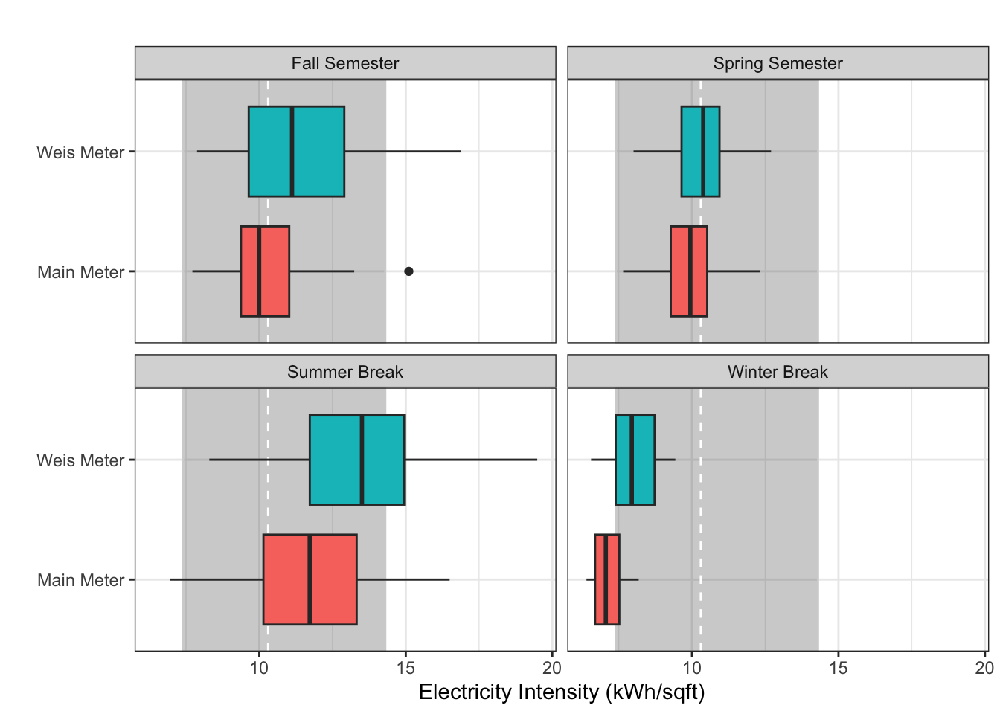
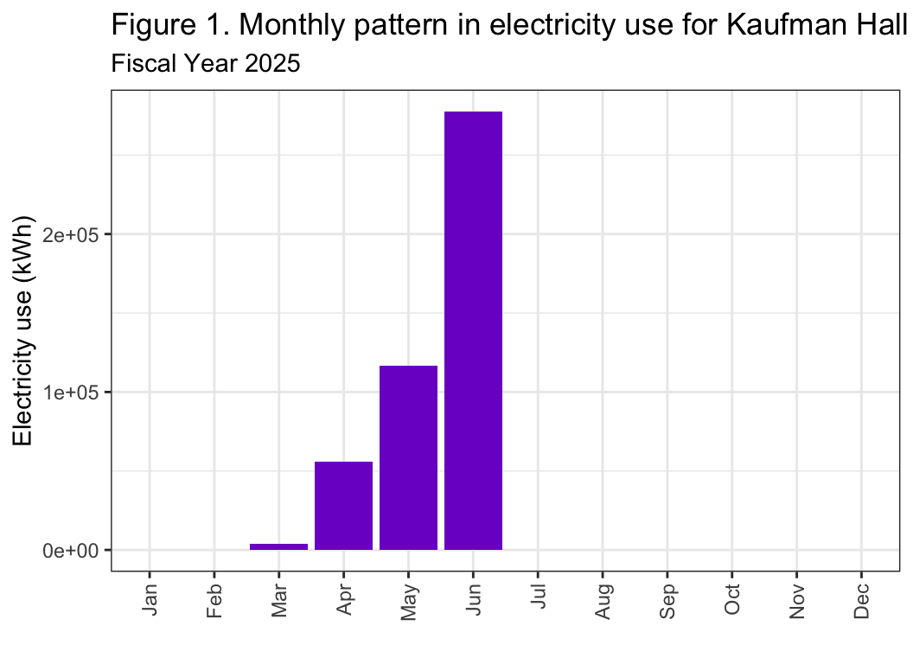

Data wrangling for Class Project
Maggie Douglas
08/19/26
Purpose
This code is meant to match PPL data to building information and reorganize it to generate electricity data by building (or combinations of buildings for those metered together).
The main steps involved are:
- Read in the PPL electricity data, building information data, and a
key to connect them by name
- Create and store an annual summary of the electricity data by meter
- Restructure the building data to generate a single row for the Main Meter and Weis Meter buildings
- Join PPL electricity data (daily and annual) to building information using a key that connects the two by building name
- Aggregate electricity and square footage data by building
- Inspect the data using a table
- Generate a few summary graphs
- Export the cleaned and reorganized data for downstream analyses
Load libraries + data
library(tidyverse) # load tidyverse
library(ggthemes)
library(GGally)
library(here)# load electricity data + reformat date
kwh <- read.csv("./data/FY25 PPL Electricity Data.csv", strip.white = T) %>%
mutate(date = mdy(date)) %>%
complete(nesting(account_number, meter_origin, meter_number), date) %>%
mutate(period = ifelse((date > ymd("2024-08-28") & date < ymd("2024-12-21")), "Fall Semester",
ifelse((date > ymd("2025-01-07") & date < ymd("2025-05-18")), "Spring Semester",
ifelse(date > ymd("2024-12-21") & date < ymd("2025-01-07"), "Winter Break", "Summer Break"))))
kwh_sub <- read.csv("./output/kwh_main_daily.csv", strip.white = T) %>%
mutate(date = ymd(date)) %>%
mutate(period = ifelse((date > ymd("2024-08-28") & date < ymd("2024-12-21")), "Fall Semester",
ifelse((date > ymd("2025-01-07") & date < ymd("2025-05-18")), "Spring Semester",
ifelse(date > ymd("2024-12-21") & date < ymd("2025-01-07"), "Winter Break", "Summer Break"))))
# store temp data for later
temp <- dplyr::select(kwh, date, ave_temp) %>%
unique()
# load building data + clean up building names
buildings <- read.csv("./keys/fy25_building_list_updated.csv",
strip.white = T) %>%
mutate(NAME = str_remove_all(NAME, "/"),
NAME = str_replace_all(NAME, " "," "),
NAME = str_replace_all(NAME, " "," "))
# load keys to link datasets
key <- read.csv("./keys/meter_building_key.csv", strip.white = T) %>%
mutate(NAME = str_remove_all(NAME, "/"),
NAME = str_replace_all(NAME, " "," "),
NAME = str_replace_all(NAME, " "," "))
key_sub <- read.csv("./keys/submeter_building_key.csv", strip.white = T) %>%
mutate(NAME = str_remove_all(NAME, "/"),
NAME = str_replace_all(NAME, " "," "),
NAME = str_replace_all(NAME, " "," "))
key_occ <- read.csv("./keys/occupancy_key.csv",
strip.white = T) %>%
mutate(NAME = str_remove_all(NAME, "/"),
NAME = str_replace_all(NAME, " "," "),
NAME = str_replace_all(NAME, " "," "))
# load occupancy data + generate mean for AY
occupants <- read.csv("./data/housing_counts.csv",
strip.white = T) %>%
mutate(sem_yr = paste(semester, year)) %>% # create semester column
filter(sem_yr %in% c("Fall 2024", "Spring 2025")) %>% # filter to FY25
group_by(building_name) %>%
summarize(occupants = mean(occupants, na.rm = T)) %>% # generate mean occupants across semester
left_join(key_occ, by = "building_name") %>% # join to building names
group_by(NAME) %>%
summarize(occupants = sum(occupants, na.rm = T)) # sum across buildings with multiple rows
# PPL data
## store annual totals for kWh
## checked - buildings with missing days do not have weirdly high values when they come back online
kwh_annual <- kwh %>%
filter(!is.na(total_kwh)) %>%
group_by(meter_origin) %>%
summarize(kwh = sum(total_kwh, na.rm = T),
days_perc = (n()/365)*100)
kwh_academic <- kwh %>%
filter(period %in% c("Spring Semester","Fall Semester")) %>%
filter(!is.na(total_kwh)) %>%
group_by(meter_origin) %>%
summarize(kwh = sum(total_kwh, na.rm = T),
days_perc = (n()/244)*100) # days in academic year only
## Submeter data
# buildings with missing days are variable in how they come back online
# Library has a strange high value on 2/17
# Kline and CHW don't have obvious jump after missing data
# all other buildings (93% of days) have strange values 9/02 & 9/06
kwh_sub_clean <- kwh_sub %>%
mutate(kwh = ifelse(kwh == 0, NA, kwh)) %>% # fill in NA for zero values
mutate(kwh = ifelse(building == "Library" & date == ymd("2025-02-17"), NA, kwh)) %>% # replace outlier w/ NA
mutate(kwh = ifelse(date %in% c(ymd("2024-09-02"),ymd("2024-09-06")), NA, kwh)) %>%
filter(! building %in% c("Rector","HUB")) # these two buildings have < 10% of days present
kwh_sub_annual <- kwh_sub_clean %>%
filter(!is.na(kwh)) %>% # filter out NAs
group_by(building) %>%
summarize(kwh = sum(kwh, na.rm = T),
days_perc = (n()/365)*100) %>% # counts percent of days w/ non-zero data
filter(! building %in% c("Rector","HUB")) # these two buildings have < 10% of days present
kwh_sub_academic <- kwh_sub_clean %>%
filter(period %in% c("Spring Semester","Fall Semester")) %>%
filter(!is.na(kwh)) %>% # filter out NAs
group_by(building) %>%
summarize(kwh = sum(kwh, na.rm = T),
days_perc = (n()/244)*100) %>% # counts percent of days w/ non-zero data
filter(! building %in% c("Rector","HUB")) # these two buildings have < 10% of days presentCheck key data
str(kwh)
str(buildings)
str(occupants)Restructure building data
- Generate total square footage for buildings on the Main Meter and fill in values for other variables
- Similar operation for buildings on the Weis Meter
- Filter building info to those with individual meters and then add back in the Main Meter and Weis aggregated information
# Generate lookup table for each meter status
buildings_main <- buildings %>%
filter(main_meter == 1) %>% # filter to main meter buildings
summarize(sqft = sum(sqft, na.rm = T)) %>% # sum sqft for these buildings
mutate(meter = "Main Meter - Total",
NAME = "Main Meter",
type_new = "Main Meter") %>%
dplyr::select(type_new, NAME, sqft, meter)
buildings_weis <- buildings %>%
filter(weis_meter == 1) %>% # filter to weis buildings
summarize(sqft = sum(sqft, na.rm = T)) %>%
mutate(meter = "Weis Meter - Total",
NAME = "Weis Meter",
type_new = "Weis Meter") %>%
dplyr::select(type_new, NAME, sqft, meter)
buildings_agg <- rbind(buildings_main, buildings_weis)
buildings_individual <- buildings %>%
filter(main_meter == 0 & weis_meter == 0) %>% # keep only buildings on individual meters
mutate(meter = "Individual") %>%
dplyr::select(meter, NAME, type_new, occupant, address, date_constr, date_acqd, date_reno, sqft, rental) %>% # select relevant columns
# rbind(buildings_main, buildings_weis) %>%
dplyr::select(type_new, NAME, sqft, meter)
buildings_submeter <- buildings %>%
filter(main_disagg ==1) %>% # keep only buildings on individual meters
mutate(meter = "Submeter") %>%
dplyr::select(meter, NAME, type_new, occupant, address, date_constr, date_acqd, date_reno, sqft, rental) %>% # select relevant columns
# rbind(buildings_main, buildings_weis) %>%
dplyr::select(type_new, NAME, sqft, meter)
# Store summary of building meter status
buildings_sum <- buildings %>%
mutate(meter = ifelse(weis_meter == 1, "Weis Meter",
ifelse(main_meter == 1 & main_disagg == 0, "Main Meter",
ifelse(main_disagg == 1, "Submeter", "Individual"))))Wrangle datasets
Annual totals
# generate annual summary for individually metered buildings
joined_individual <- kwh_annual %>%
left_join(key, by = "meter_origin") %>% # join to key to match meters to building names
right_join(buildings_individual, by = "NAME", relationship = "many-to-one") %>% # join to building info by name
group_by(type_new, NAME, meter) %>% # group by building
summarize(days_perc = min(days_perc, na.rm = T), # take minimum days_perc to reflect coverage of whole data
kwh = sum(kwh, na.rm = T), # sum kwh by building
sqft = mean(sqft, na.rm = T)) %>% # take mean to preserve sqft data
mutate(type = type_new) %>%
left_join(occupants, by = "NAME") %>%
ungroup() %>%
mutate_all(~ifelse(is.nan(.), NA, .)) %>%
dplyr::select(type, meter, NAME, days_perc, kwh, sqft, occupants)
# generate annual summary for submetered buildings
joined_sub <- kwh_sub_annual %>%
left_join(key_sub, by = "building") %>%
left_join(buildings_submeter, by = "NAME", relationship = "many-to-one") %>% # join to building info by name
filter(building != "CHW_Base") %>% # remove duplicate CHW value - not sure what this is?
group_by(type_new, NAME, days_perc, meter) %>% # group by building
summarize(kwh = sum(kwh, na.rm = T), # sum kwh by building
sqft = mean(sqft, na.rm = T)) %>% # preserve sqft as is
mutate(type = type_new) %>%
# filter(!is.na(type_new)) %>% # filter out those with NA for type
left_join(occupants, by = "NAME") %>%
ungroup() %>%
mutate_all(~ifelse(is.nan(.), NA, .)) %>%
dplyr::select(type, meter, NAME, days_perc, kwh, sqft, occupants)
# generate annual summary for main and weis meters
joined_agg <- kwh_annual %>%
left_join(key, by = "meter_origin") %>%
right_join(buildings_agg, by = "NAME") %>%
group_by(type_new, NAME, days_perc, meter) %>% # group by building
summarize(kwh = sum(kwh, na.rm = T), # sum kwh by building
sqft = mean(sqft, na.rm = T)) %>% # preserve sqft as is
mutate(type = type_new) %>%
# filter(!is.na(type_new)) %>% # filter out those with NA for type
left_join(occupants, by = "NAME") %>%
ungroup() %>%
mutate_all(~ifelse(is.nan(.), NA, .)) %>%
dplyr::select(type, meter, NAME, days_perc, kwh, sqft, occupants)
# combine into one data frame
joined_full <- rbind(joined_individual, joined_sub, joined_agg) %>%
filter(kwh != 0) %>%
mutate(kwh_corr = kwh/(days_perc/100)) %>% # estimate kwh for all days in the year
arrange(type, meter) %>%
dplyr::select(type, meter, NAME, days_perc, kwh, kwh_corr, sqft, occupants)
# store lookup for data coverage
data_cov <- joined_full %>%
dplyr::select(NAME, days_perc)Academic totals
# generate annual summary for individually metered buildings
joined_ind_aca <- kwh_academic %>%
left_join(key, by = "meter_origin") %>% # join to key to match meters to building names
right_join(buildings_individual, by = "NAME", relationship = "many-to-one") %>% # join to building info by name
group_by(type_new, NAME, meter) %>% # group by building
summarize(days_perc = min(days_perc, na.rm = T), # take minimum days_perc to reflect coverage of whole data
kwh = sum(kwh, na.rm = T), # sum kwh by building
sqft = mean(sqft, na.rm = T)) %>% # take mean to preserve sqft data
mutate(type = type_new) %>%
left_join(occupants, by = "NAME") %>%
ungroup() %>%
mutate_all(~ifelse(is.nan(.), NA, .)) %>%
dplyr::select(type, meter, NAME, days_perc, kwh, sqft, occupants)
# generate annual summary for submetered buildings
joined_sub_aca <- kwh_sub_academic %>%
left_join(key_sub, by = "building") %>%
left_join(buildings_submeter, by = "NAME", relationship = "many-to-one") %>% # join to building info by name
filter(building != "CHW_Base") %>% # remove duplicate CHW value - not sure what this is?
group_by(type_new, NAME, days_perc, meter) %>% # group by building
summarize(kwh = sum(kwh, na.rm = T), # sum kwh by building
sqft = mean(sqft, na.rm = T)) %>% # preserve sqft as is
mutate(type = type_new) %>%
# filter(!is.na(type_new)) %>% # filter out those with NA for type
left_join(occupants, by = "NAME") %>%
ungroup() %>%
mutate_all(~ifelse(is.nan(.), NA, .)) %>%
dplyr::select(type, meter, NAME, days_perc, kwh, sqft, occupants)
# generate annual summary for main and weis meters
joined_agg_aca <- kwh_academic %>%
left_join(key, by = "meter_origin") %>%
right_join(buildings_agg, by = "NAME") %>%
group_by(type_new, NAME, days_perc, meter) %>% # group by building
summarize(kwh = sum(kwh, na.rm = T), # sum kwh by building
sqft = mean(sqft, na.rm = T)) %>% # preserve sqft as is
mutate(type = type_new) %>%
# filter(!is.na(type_new)) %>% # filter out those with NA for type
left_join(occupants, by = "NAME") %>%
ungroup() %>%
mutate_all(~ifelse(is.nan(.), NA, .)) %>%
dplyr::select(type, meter, NAME, days_perc, kwh, sqft, occupants)
# combine into one data frame
joined_full_aca <- rbind(joined_ind_aca, joined_sub_aca, joined_agg_aca) %>%
filter(kwh != 0) %>%
mutate(kwh_corr = kwh/(days_perc/100)) %>% # estimate kwh for all days in the year
arrange(type, meter) %>%
dplyr::select(type, meter, NAME, days_perc, kwh, kwh_corr, sqft, occupants)
# store lookup for data coverage
data_cov_aca <- joined_full_aca %>%
dplyr::select(NAME, days_perc)Daily data
# generate daily summary for individually metered buildings
daily_individual <- kwh %>%
left_join(key, by = "meter_origin") %>% # join to key to match meters to building names
right_join(buildings_individual, by = "NAME", relationship = "many-to-many") %>% # join to building info by name
group_by(type_new, NAME, date, meter) %>% # group by building
summarize(kwh = sum(total_kwh, na.rm = T), # sum kwh by building
sqft = mean(sqft, na.rm = T)) %>%
mutate(type = type_new) %>%
ungroup() %>%
mutate_all(~ifelse(is.nan(.), NA, .)) %>% # convert NaN to NA
dplyr::select(type, meter, date, NAME, kwh, sqft) %>%
complete(nesting(type, meter, NAME), date) %>% # restore NA values for missing date-building combos
filter(!is.na(date)) # remove rows without value for date
# generate daily summary for submetered buildings
daily_sub <- kwh_sub_clean %>%
left_join(key_sub, by = "building") %>%
left_join(buildings_submeter, by = "NAME", relationship = "many-to-one") %>% # join to building info by name
filter(building != "CHW_Base") %>% # remove duplicate CHW value - not sure what this is?
group_by(type_new, NAME, date, meter) %>% # group by building
summarize(kwh = sum(kwh, na.rm = T),
sqft = mean(sqft, na.rm = T)) %>%
mutate(type = type_new) %>%
filter(!is.na(type_new)) %>%
ungroup() %>%
dplyr::select(type, meter, date, NAME, kwh, sqft) %>%
mutate_all(~ifelse(is.nan(.), NA, .)) %>% # convert NaN to NA
mutate(kwh = ifelse(kwh == 0, NA, kwh)) %>% # restore NA values for missing date-building combos
filter(!is.na(date)) # remove rows without value for date
# generate daily summary for main and weis meters
daily_agg <- kwh %>%
left_join(key, by = "meter_origin") %>%
right_join(buildings_agg, by = "NAME") %>%
group_by(type_new, NAME, date, meter) %>% # group by building
summarize(kwh = sum(total_kwh, na.rm = T), # sum kwh by building
sqft = mean(sqft, na.rm = T)) %>% # preserve sqft as is
mutate(type = type_new) %>%
ungroup() %>%
mutate_all(~ifelse(is.nan(.), NA, .)) %>%
dplyr::select(type, meter, date, NAME, kwh, sqft)
# generate complete daily dataset
daily_full <- rbind(daily_individual, daily_agg, daily_sub) %>%
mutate(date = as.Date(date)) %>%
arrange(type, meter, NAME, date) %>%
dplyr::select(type, meter, NAME, date, kwh, sqft) %>%
left_join(occupants, by = "NAME") %>%
left_join(data_cov, by = "NAME") %>%
merge(temp, by = "date") %>% # for some reason the join by date is not fully working... duplicating rows
filter(!is.na(ave_temp)) %>% # remove duplicate rows
mutate(period = ifelse((date > ymd("2024-08-28") & date < ymd("2024-12-21")), "Fall Semester",
ifelse((date > ymd("2025-01-07") & date < ymd("2025-05-18")), "Spring Semester",
ifelse(date > ymd("2024-12-21") & date < ymd("2025-01-07"), "Winter Break", "Summer Break")))) %>%
dplyr::select(type, meter, NAME, days_perc, sqft, occupants, period, date, kwh, ave_temp) %>%
arrange(NAME)Correlations by type
# store datasets for daily summaries
daily_main <- filter(daily_agg, meter == "Main Meter - Total") %>%
mutate(kwh_main = kwh) %>%
dplyr::select(-sqft, -meter, -NAME, -kwh, -type)
daily_weis <- filter(daily_agg, meter == "Weis Meter - Total") %>%
dplyr::select(-sqft, -meter, -NAME)
daily_ind_agg <- daily_individual %>%
group_by(type, date) %>%
summarize(kwh = sum(kwh, na.rm = T)) `summarise()` has regrouped the output.
ℹ Summaries were computed grouped by type and date.
ℹ Output is grouped by type.
ℹ Use `summarise(.groups = "drop_last")` to silence this message.
ℹ Use `summarise(.by = c(type, date))` for per-operation grouping
(`?dplyr::dplyr_by`) instead.daily_tot <- rbind(daily_weis, daily_ind_agg) %>%
left_join(daily_main, by = "date") %>%
filter(! type %in% c("Solar"))
ggplot(daily_tot, aes(x = kwh_main, y = kwh, color = type)) +
facet_wrap(. ~ type, scales = 'free') +
geom_point(alpha = 0.2) +
geom_smooth(method = 'lm', formula = 'y ~ x') +
theme_bw() +
theme(legend.position = "none") +
labs(x = "Daily electricity use on the Main Meter (kWh)",
y = "Daily electricity use on other meters (kWh)",
title = "Relationship between Main Meter and other campus buildings",
subtitle = "kWh aggregated across individually metered buildings by type")
| Version | Author | Date |
|---|---|---|
| f60de55 | maggiedouglas | 2026-08-15 |
Data availability by type
buildings_sum$meter <- factor(buildings_sum$meter,
levels = c("Weis Meter", "Main Meter",
"Submeter", "Individual"))
pal <- c("lightgrey","darkgrey","#CAB2D6","#6A3D9A")
buildings_graph <- buildings_sum %>%
filter(!is.na(meter) & !type_new %in% c("Res Hall - U","Non-building","Production","Mixed"))
write.csv(buildings_graph, "./output/buildings_graph.csv", row.names = F)
ggplot(buildings_graph,
aes(x = reorder(type_new, sqft, FUN = "sum"), y = sqft/1000, fill = meter)) +
geom_col(position = "stack") +
scale_fill_manual(values = pal) +
theme_bw() +
labs(x = "", y = "Square Footage (1000)", fill = "Meter status") +
theme(axis.text.x = element_text(angle = 45, vjust = 1, hjust = 1))
| Version | Author | Date |
|---|---|---|
| bd65297 | maggiedouglas | 2026-03-17 |
| bfe7b73 | maggiedouglas | 2026-03-04 |
| d04b276 | maggiedouglas | 2026-03-04 |
| 1ea78ae | maggiedouglas | 2026-02-27 |
| e752845 | maggiedouglas | 2026-02-26 |
| 08cd7e1 | maggiedouglas | 2026-02-25 |
| 8c6712f | maggiedouglas | 2026-02-24 |
| 2fef649 | maggiedouglas | 2026-02-24 |
| a379c87 | maggiedouglas | 2026-02-23 |
| 1e465a5 | maggiedouglas | 2026-02-23 |
ggplot(buildings_graph,
aes(x = reorder(type_new, sqft, FUN = "sum"), fill = meter)) +
geom_bar(position = "stack") +
scale_fill_manual(values = pal) +
theme_bw() +
labs(x = "", y = "Number of Buildings", fill = "Meter status") +
theme(axis.text.x = element_text(angle = 45, vjust = 1, hjust = 1))
Practice boxplot
Here’s an example of how to make a faceted boxplot
daily_test <- daily_full %>%
filter(NAME %in% c("Main Meter","Weis Meter")) %>%
mutate(kwh_sqft = (kwh/sqft*365)) # adjust daily values to per year equivalent
ggplot(daily_test,
aes(x = type, y = kwh_sqft, fill = type)) +
annotate("rect", xmin = -Inf, xmax = Inf, ymin = 7.4, ymax = 14.3, color = "lightgray", alpha = 0.3) +
geom_hline(yintercept = 10.3, linetype = "dashed", color = "white") +
geom_boxplot() +
coord_flip() +
facet_wrap(. ~ period) +
theme_bw() +
theme(legend.position = "none") +
labs(x = "", y = "Electricity Intensity (kWh/sqft)",
title = "Figure 2. Electricity intensity by aggregate meter in FY25. ")
Bar plot
kauf <- filter(daily_full, NAME == "Kaufman Hall") %>%
mutate(date = ymd(date),
month = month(date, label = TRUE, abbr = TRUE))
ggplot(kauf, aes(x = month, y = kwh)) +
geom_col(position = "stack", fill = "purple3") +
theme_bw() +
theme(axis.text.x = element_text(angle = 90, vjust = 0.5, hjust = 1)) +
theme(legend.position = "none") +
labs(title = "Figure 1. Monthly pattern in electricity use for Kaufman Hall",
subtitle = "Fiscal Year 2025", x = "", y = "Electricity use (kWh)")
| Version | Author | Date |
|---|---|---|
| ed8bc40 | maggiedouglas | 2026-05-05 |
Export for downstream analyses
# final data check
str(daily_full)
str(joined_full_aca)
str(joined_full)
today <- today("EST") %>%
str_remove(" UTC")
# write.csv(daily_full, paste0("./output/kwh_daily_", today, ".csv"), row.names = F)
# write.csv(joined_full_aca, paste0("./output/kwh_academic_", today, ".csv"), row.names = F)
# write.csv(joined_full, paste0("./output/kwh_annual_", today, ".csv"), row.names = F)
sessionInfo()R version 4.6.0 (2026-04-24)
Platform: x86_64-apple-darwin20
Running under: macOS Ventura 13.7.8
Matrix products: default
BLAS: /Library/Frameworks/R.framework/Versions/4.6-x86_64/Resources/lib/libRblas.0.dylib
LAPACK: /Library/Frameworks/R.framework/Versions/4.6-x86_64/Resources/lib/libRlapack.dylib; LAPACK version 3.12.1
locale:
[1] en_US.UTF-8/en_US.UTF-8/en_US.UTF-8/C/en_US.UTF-8/en_US.UTF-8
time zone: America/New_York
tzcode source: internal
attached base packages:
[1] stats graphics grDevices utils datasets methods base
other attached packages:
[1] here_1.0.2 GGally_2.4.0 ggthemes_5.2.0 lubridate_1.9.5
[5] forcats_1.0.1 stringr_1.6.0 dplyr_1.2.1 purrr_1.2.2
[9] readr_2.2.0 tidyr_1.3.2 tibble_3.3.1 ggplot2_4.0.3
[13] tidyverse_2.0.0 workflowr_1.7.2
loaded via a namespace (and not attached):
[1] sass_0.4.10 generics_0.1.4 lattice_0.22-9 stringi_1.8.7
[5] hms_1.1.4 digest_0.6.39 magrittr_2.0.5 timechange_0.4.0
[9] evaluate_1.0.5 grid_4.6.0 RColorBrewer_1.1-3 fastmap_1.2.0
[13] Matrix_1.7-5 rprojroot_2.1.1 jsonlite_2.0.0 processx_3.9.0
[17] whisker_0.4.1 promises_1.5.0 mgcv_1.9-4 httr_1.4.8
[21] scales_1.4.0 jquerylib_0.1.4 cli_3.6.6 rlang_1.2.0
[25] splines_4.6.0 withr_3.0.3 cachem_1.1.0 yaml_2.3.12
[29] otel_0.2.0 tools_4.6.0 tzdb_0.5.0 httpuv_1.6.17
[33] ggstats_0.13.0 vctrs_0.7.3 R6_2.6.1 lifecycle_1.0.5
[37] git2r_0.36.2 fs_2.1.0 pkgconfig_2.0.3 callr_3.7.6
[41] pillar_1.11.1 bslib_0.11.0 later_1.4.8 gtable_0.3.6
[45] glue_1.8.1 Rcpp_1.1.1-1.1 xfun_0.59 tidyselect_1.2.1
[49] rstudioapi_0.19.0 knitr_1.51 farver_2.1.2 nlme_3.1-169
[53] htmltools_0.5.9 labeling_0.4.3 rmarkdown_2.31 compiler_4.6.0
[57] getPass_0.2-4 S7_0.2.2